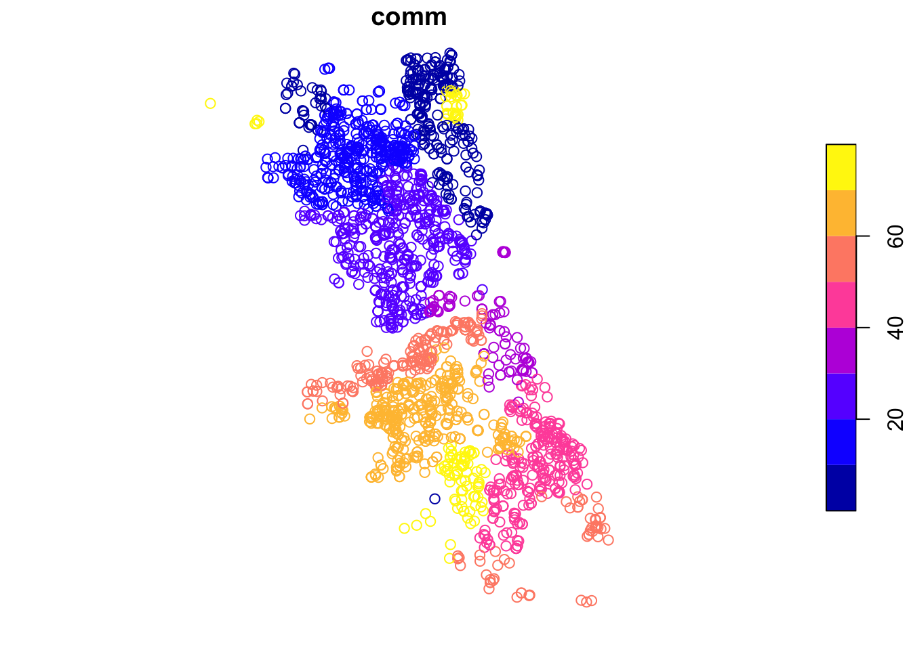
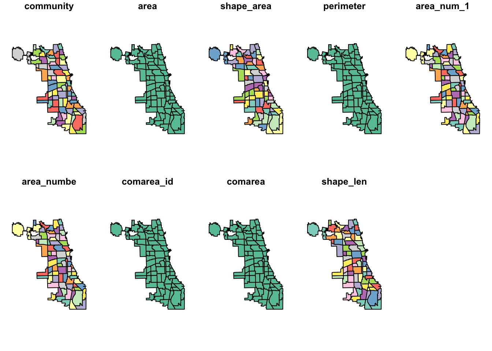
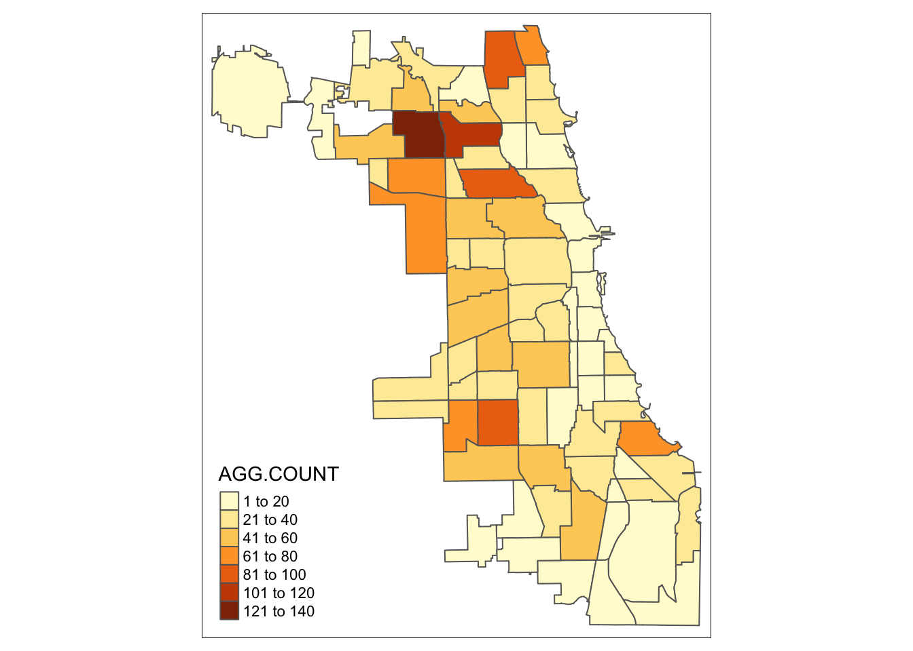
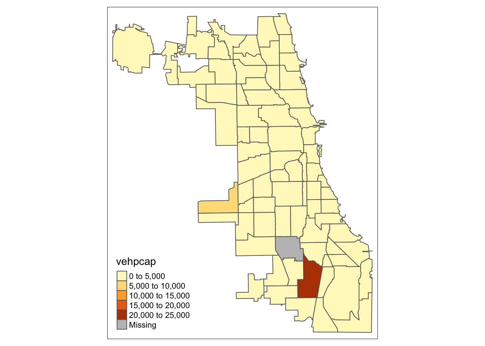

pacman::p_load(tidyverse, lubridate, sf, tmap, pdftools, RSocrata)01 Spatial Data Handline
1 Exercise Reference
Spatial Data Handling by Luc Anselin and Grant Morrison
2 Introduction
In this lab, we will use the City of Chicago open data portal to download data on abandoned vehicles. Our end goal is to create a choropleth map with abandoned vehicles per capita for Chicago community areas. Before we can create the maps, we will need to download the information, select observations, aggregate data, join different files and carry out variable transformations in order to obtain a so-called “spatially intensive” variable for mapping (i.e., not just a count of abandoned vehicles, but a per capita ratio).
3 Learning Outcome
Learn how to carry out the following tasks:
Download data from any Socrata-driven open data portal, such as the City of Chicago open data portal
Filtering a data frame for specific entries
Selecting and renaming columns
Creating a simple features spatial object
Checking and adding/adjusting projection information
Dealing with missing data
Spatial join
Spatial aggregation
Parsing a pdf file
Merging data sets
Creating new variables
Basic choropleth mapping
4 R Packages Used
| Package | Description |
|---|---|
| RSocrata | To read data directly from a Socrata powered open data portal, such as the Chicago open data portal. |
| tidyverse (includes dplyr) | To manipulate data frames, such as filtering data, selecting columns, and creating new variables. |
| lubridate | To select information out of the date format when filtering the data. |
| sf | To create and manipulate simple features spatial objects, to read in the boundary file, and perform point in polygon on the data set to fill in missing community area information. |
| pdftools | To read and parse a PDF for Chicago community area population information. |
| tmap | To make nice-looking choropleth maps. |
4.1 R Commands Used
Below follows a list of the commands used in this notebook. For further details and a comprehensive list of options, please consult the R documentation. Here is the information in a markdown table format:
| Package | Functions |
|---|---|
| base R | setwd, install.packages, library, head, dim, class, as.Date, names, !is.na, is.numeric, as.integer, is.integer, length, strsplit, unlist, for, vector, substr, gsub, as.numeric, data.frame |
| RSocrata | read.socrata |
| tidyverse | filter, %>% (pipe), select (with renaming), count, rename, mutate |
| lubridate | year, month |
| sf | st_as_sf, plot, st_crs, read_sf, st_transform, st_join, st_geometry, st_write |
| pdftools | pdf_text |
| tmap | tm_shape, tm_polygons |
Import the required R packages mentioned above
5 Obtaining data from the Chicago Open Data portal
We will use the specialized RSocrata package to download the file with 311 calls about abandoned vehicles from the City of Chicago open data portal. A list of different types of 311 nuisance calls is given by selecting the button for Service Requests. The abandoned vehicles data are contained in the entry for 311 Service Requests - Abandoned Vehicles.
To download the file, select the API button and copy the API Endpoint from the interface. This endpoint will be the target file URL. Instead of directly using the read.socrata function from the RSocrata package, we will first check if the file already exists in our local directory (../data). If it does not exist, we will download it from the City of Chicago open data portal and save it locally. If the file already exists, we will simply read it from the local directory, avoiding redundant downloads. ### Read using RSocrata
socrata.file <- "https://data.cityofchicago.org/resource/suj7-cg3j.csv"
local.file <- "../data/suj7-cg3j.csv"
if (!file.exists(local.file)) {
vehicle.data <- read.socrata(socrata.file)
write_csv(vehicle.data, local.file)
print("Data downloaded and saved locally")
} else {
vehicle.data <- read_csv(local.file)
print("Data loaded from local")
}[1] "Data loaded from local"
Note
If you try other ways to obtain this file, you may obtain a different variant of this data.
For example, if you try to download the csv file direct via the URL path, you may only obtain 1000 rows as there is a rate limit on the API.
If you download the csv file directly from the web portal, the CSV is truncated and may contain different/missing columns.
dim(vehicle.data)[1] 261486 26The table has 261,486 observations on 26 variables.
In RStudio, the type of the variable in each column is listed under its name. For example, under creation_date, we see S3: POSIXct. You can also find out the same information by applying a class command to the variable vehicle.data$creation_date, as in
class(vehicle.data$creation_date)[1] "POSIXct" "POSIXt"
Tip
Alternatively, to load the data with the correct class from a CSV, use tidyverse’s read_csv instead of base R’s read.csv. Without the correct data class, you may have to perform manual conversion before you can join data frame in downstream tasks.
5.1 Extracting observations for the desired time period
To extract the observations for the selected year (2016) and month (9), we will use the year and month functions from the lubridate package. We will embed these expressions in a filter command (from tidyverse) to select the rows/observations that match the specified criterion. We will also use the pipe command %>% to move the original data frame through the different filter stages and assign the end result to vehicle.sept16.
We again check the contents with a head command.
vehicle.sept16 <- vehicle.data %>% filter(year(creation_date) == 2016) %>%
filter(month(creation_date) == 9)
head(vehicle.sept16)# A tibble: 6 × 26
creation_date status completion_date service_request_number
<dttm> <chr> <dttm> <chr>
1 2016-09-01 16:00:00 Completed - Dup 2016-09-01 16:00:00 16-06219980
2 2016-09-01 16:00:00 Completed - Dup 2016-09-01 16:00:00 16-06220033
3 2016-09-01 16:00:00 Completed - Dup 2016-09-01 16:00:00 16-06220056
4 2016-09-01 16:00:00 Completed - Dup 2016-09-01 16:00:00 16-06220096
5 2016-09-01 16:00:00 Completed - Dup 2016-09-01 16:00:00 16-06221253
6 2016-09-01 16:00:00 Completed - Dup 2016-09-01 16:00:00 16-06225666
# ℹ 22 more variables: type_of_service_request <chr>, license_plate <chr>,
# vehicle_make_model <chr>, vehicle_color <chr>, current_activity <chr>,
# most_recent_action <chr>,
# how_many_days_has_the_vehicle_been_reported_as_parked_ <dbl>,
# street_address <chr>, zip_code <dbl>, x_coordinate <dbl>,
# y_coordinate <dbl>, ward <dbl>, police_district <dbl>,
# community_area <dbl>, ssa <dbl>, latitude <dbl>, longitude <dbl>, …and the dimension:
dim(vehicle.sept16)[1] 2555 26The filtered table now only has 2,637 observations.
5.2 Selecting the variables for the final table
The current data frame contains 26 variables. Several of these are not really of interest to us, since we basically want the locations of the events. We will use the select command from tidyverse to pick out the columns that we want to keep. In addition, we will use the rename option in select to give new variable names. While this is not absolutely necessary at this stage (RSocrata has turned any weird variable names into proper R names), we may later want to save the data as a point shape file. The data associated with a shape file are store in a separate dBase file, and dBase only allows 10 characters for variable names.
So, in order to save ourselves some work later on, we will rename the selected variables to strings that do not exceed 10 characters.
First, we check the variable names using the names command.
names(vehicle.sept16) [1] "creation_date"
[2] "status"
[3] "completion_date"
[4] "service_request_number"
[5] "type_of_service_request"
[6] "license_plate"
[7] "vehicle_make_model"
[8] "vehicle_color"
[9] "current_activity"
[10] "most_recent_action"
[11] "how_many_days_has_the_vehicle_been_reported_as_parked_"
[12] "street_address"
[13] "zip_code"
[14] "x_coordinate"
[15] "y_coordinate"
[16] "ward"
[17] "police_district"
[18] "community_area"
[19] "ssa"
[20] "latitude"
[21] "longitude"
[22] "location"
[23] "location_address"
[24] "location_city"
[25] "location_state"
[26] "location_zip" To keep things simple, we will only keep community_area, latitude and longitude, and turn them into comm, lat and lon. The new data set is vehicles.final. Note that to rename a variable, the new name is listed first, on the left hand side of the equal sign, and the old name is on the right hand side. We check the result with the head command.
vehicles.final <- vehicle.sept16 %>% select(comm = community_area,
lat = latitude, lon = longitude)
head(vehicles.final)# A tibble: 6 × 3
comm lat lon
<dbl> <dbl> <dbl>
1 17 41.9 -87.8
2 20 41.9 -87.7
3 20 41.9 -87.7
4 1 42.0 -87.7
5 15 42.0 -87.7
6 70 41.7 -87.76 Creating a Point Layer
So far, we have only dealt with a regular data frame, without taking advantage of any spatial features. However, the data frame contains fields with coordinates and R can turn these into an explicit spatial points layer that can be saved in a range of GIS formats. To accomplish this, we will use the (new) simple features or sf package functionality, which improves upon the older sp.
We will first use the lat and lon columns in the data frame to create a spatial points object. Note that lon is the x-coordinate and lat is the y-coordinate.
6.1 Creating a point layer from coordinates in a table - principle
In sf, a simple features object is constructed by combining a geometry with the actual data (in a data frame). However, this is simplified for point objects when the data frame contains the coordinates as variables. This is the case in our example, where we have latitude and longitude. We also have x and y, but since we are not sure what projection these coordinates correspond with, they are not useful at this stage.
The advantage of lat-lon is that they are decimal degrees, and thus unprojected. However, we can provide the information on the datum, typically WGS84 (the standard used in most applications for decimal degrees) by passing the coordinate reference system argument (crs) set to the EPSG code 4326. After that, we can use the built-in projection transformation functionality in sf to turn the points into any projection we want.1
6.1.1 Missing coordinates
In order to create a points layer, we need coordinates for every observation. However, as we can see from the head command above, there are (at least) two observations that do not have lat-lon information. Before we can proceed, we need to remove these from the data frame.
We again use a filter command, but now combine it with the !is.na expression, i.e., is not missing (na). We take a little short cut by assuming that if one of lat or lon is missing, the other one will be missing as well (although to keep it completely general, we would need to check each variable separately). We assign the result to the vehicle.coord data frame.
vehicle.coord <- vehicles.final %>% filter(!(is.na(lat)))
dim(vehicle.coord)[1] 2553 3There are 2 records with missing coordinates, so we will omit them. The data records reduce from 2637 to 2635.
6.2 Creating a spatial points object
The sf package turns a non-spatial object like a data frame into a simple features spatial object by means of the st_as_sf function. This function can take a large number of arguments, but for now we will only use a few:
the name of the data frame, i.e., vehicle.coord
coords: the variable names for x and y (given in parentheses)crs: the coordinate reference system, here using the EPSG code of 4326agr: the so-called attibute-geometry-relationship which specifies how the attribute information (the data) relate to the geometry (the points); in our example, we will use “constant”
In our example, we create vehicle.points and check its class.
vehicle.points = st_as_sf(vehicle.coord, coords = c("lon", "lat"), crs = 4326, agr = "constant")
class(vehicle.points)[1] "sf" "tbl_df" "tbl" "data.frame"Even though it is not that informative at this stage, we can also make a quick plot. Later, we will see how we can refine these plots using the tmap package.
plot(vehicle.points)
We can also do a quick check of the projection information using the st_crs command.
st_crs(vehicle.points)Coordinate Reference System:
User input: EPSG:4326
wkt:
GEOGCRS["WGS 84",
ENSEMBLE["World Geodetic System 1984 ensemble",
MEMBER["World Geodetic System 1984 (Transit)"],
MEMBER["World Geodetic System 1984 (G730)"],
MEMBER["World Geodetic System 1984 (G873)"],
MEMBER["World Geodetic System 1984 (G1150)"],
MEMBER["World Geodetic System 1984 (G1674)"],
MEMBER["World Geodetic System 1984 (G1762)"],
MEMBER["World Geodetic System 1984 (G2139)"],
ELLIPSOID["WGS 84",6378137,298.257223563,
LENGTHUNIT["metre",1]],
ENSEMBLEACCURACY[2.0]],
PRIMEM["Greenwich",0,
ANGLEUNIT["degree",0.0174532925199433]],
CS[ellipsoidal,2],
AXIS["geodetic latitude (Lat)",north,
ORDER[1],
ANGLEUNIT["degree",0.0174532925199433]],
AXIS["geodetic longitude (Lon)",east,
ORDER[2],
ANGLEUNIT["degree",0.0174532925199433]],
USAGE[
SCOPE["Horizontal component of 3D system."],
AREA["World."],
BBOX[-90,-180,90,180]],
ID["EPSG",4326]]7 Abandoned Vehicles by Community Area
At this point, we will go about things in a slightly different way from how they are illustrated in the GeoDa workbook example. As it turns out, some of the points have missing community area information, which is a critical element to compute the number of abandoned cars at that scale. In GeoDa, we used a visual approach to obtain the missing information. Here, we will exploit some of the GIS functionality in sf to carry out a spatial join. This boils down to identifying which points belong to each community area (a so-called point in polygon query) and assigning the corresponding community area identifier to each point.
We proceed in three steps. First, we create a simple features spatial polygon object with the boundaries of the community areas, which we download from the Chicago Open Data portal. Next, we carry out a spatial join between our points object and the polygon object to assign a community area code to each point. Finally, we compute the point count by community area.
Community Area boundary file
We resort to the City of Chicago open data portal for the boundary file of the community areas. From the opening screen, select the button for Facilities & Geo Boundaries. This yields a list of different boundary files for a range of geographic areal units. The one for the community areas is Boundaries - Community Areas (current). This brings up an overview map of the geography of the community areas of Chicago. Of course, we could simply select one of the export buttons to download the files, but we want to do this programmatically. As it turns out, sf can read a geojson formatted file directly from the web, and we will exploit that functionality.
First, we need the name for the file. We can check the Socrata API file name, but that contains a json file, and we want a specific geojson file. As it turns out, the latter is simply the same file name, but with the geojson file extension. We set our variable comm.file to this URL and then use sf_read to load the boundary information into chicago.comm. As before, we can do a quick check of the class using the class command.
comm.file <- "https://data.cityofchicago.org/resource/igwz-8jzy.geojson"
comm.local <- "../data/igwz-8jzy.geojson"
if (!file.exists(comm.local)) {
download.file(comm.file, comm.local, method = "curl")
print("File downloaded and saved locally")
} else {
print("File exists locally. Reading locally")
}[1] "File exists locally. Reading locally"chicago.comm <- read_sf(comm.local)
class(chicago.comm)[1] "sf" "tbl_df" "tbl" "data.frame"class(chicago.comm$area_num_1)[1] "character"In addition, we check the projection information using st_crs.
st_crs(chicago.comm)Coordinate Reference System:
User input: WGS 84
wkt:
GEOGCRS["WGS 84",
DATUM["World Geodetic System 1984",
ELLIPSOID["WGS 84",6378137,298.257223563,
LENGTHUNIT["metre",1]]],
PRIMEM["Greenwich",0,
ANGLEUNIT["degree",0.0174532925199433]],
CS[ellipsoidal,2],
AXIS["geodetic latitude (Lat)",north,
ORDER[1],
ANGLEUNIT["degree",0.0174532925199433]],
AXIS["geodetic longitude (Lon)",east,
ORDER[2],
ANGLEUNIT["degree",0.0174532925199433]],
ID["EPSG",4326]]Again, the layer is unprojected in decimal degrees. Also, a quick plot. Note that, by default, sf draws a choropleth map for each variable included in the data frame. Since we won’t be using sf for mapping, we ignore that aspect for now.
plot(chicago.comm)
We also use head to check on the types of the variables.
head(chicago.comm)Simple feature collection with 6 features and 9 fields
Geometry type: MULTIPOLYGON
Dimension: XY
Bounding box: xmin: -87.7069 ymin: 41.79448 xmax: -87.58001 ymax: 41.99076
Geodetic CRS: WGS 84
# A tibble: 6 × 10
community area shape_area perimeter area_num_1 area_numbe comarea_id comarea
<chr> <chr> <chr> <chr> <chr> <chr> <chr> <chr>
1 DOUGLAS 0 46004621.… 0 35 35 0 0
2 OAKLAND 0 16913961.… 0 36 36 0 0
3 FULLER PA… 0 19916704.… 0 37 37 0 0
4 GRAND BOU… 0 48492503.… 0 38 38 0 0
5 KENWOOD 0 29071741.… 0 39 39 0 0
6 LINCOLN S… 0 71352328.… 0 4 4 0 0
# ℹ 2 more variables: shape_len <chr>, geometry <MULTIPOLYGON [°]>7.0.1 Changing projections
Before moving on to the spatial join operation, we will convert both the community area boundaries and the vehicle points to the same projection, using the st_transform command. We assign the UTM (Universal Tranverse Mercator) zone 16N, which the the proper one for Chicago, with an EPSG code of 32616. After the projection transformation, we check the result using st_crs.
chicago.comm <- st_transform(chicago.comm,32616)
st_crs(chicago.comm)Coordinate Reference System:
User input: EPSG:32616
wkt:
PROJCRS["WGS 84 / UTM zone 16N",
BASEGEOGCRS["WGS 84",
ENSEMBLE["World Geodetic System 1984 ensemble",
MEMBER["World Geodetic System 1984 (Transit)"],
MEMBER["World Geodetic System 1984 (G730)"],
MEMBER["World Geodetic System 1984 (G873)"],
MEMBER["World Geodetic System 1984 (G1150)"],
MEMBER["World Geodetic System 1984 (G1674)"],
MEMBER["World Geodetic System 1984 (G1762)"],
MEMBER["World Geodetic System 1984 (G2139)"],
ELLIPSOID["WGS 84",6378137,298.257223563,
LENGTHUNIT["metre",1]],
ENSEMBLEACCURACY[2.0]],
PRIMEM["Greenwich",0,
ANGLEUNIT["degree",0.0174532925199433]],
ID["EPSG",4326]],
CONVERSION["UTM zone 16N",
METHOD["Transverse Mercator",
ID["EPSG",9807]],
PARAMETER["Latitude of natural origin",0,
ANGLEUNIT["degree",0.0174532925199433],
ID["EPSG",8801]],
PARAMETER["Longitude of natural origin",-87,
ANGLEUNIT["degree",0.0174532925199433],
ID["EPSG",8802]],
PARAMETER["Scale factor at natural origin",0.9996,
SCALEUNIT["unity",1],
ID["EPSG",8805]],
PARAMETER["False easting",500000,
LENGTHUNIT["metre",1],
ID["EPSG",8806]],
PARAMETER["False northing",0,
LENGTHUNIT["metre",1],
ID["EPSG",8807]]],
CS[Cartesian,2],
AXIS["(E)",east,
ORDER[1],
LENGTHUNIT["metre",1]],
AXIS["(N)",north,
ORDER[2],
LENGTHUNIT["metre",1]],
USAGE[
SCOPE["Engineering survey, topographic mapping."],
AREA["Between 90°W and 84°W, northern hemisphere between equator and 84°N, onshore and offshore. Belize. Canada - Manitoba; Nunavut; Ontario. Costa Rica. Cuba. Ecuador - Galapagos. El Salvador. Guatemala. Honduras. Mexico. Nicaragua. United States (USA)."],
BBOX[0,-90,84,-84]],
ID["EPSG",32616]]vehicle.points <- st_transform(vehicle.points,32616)
st_crs(vehicle.points)Coordinate Reference System:
User input: EPSG:32616
wkt:
PROJCRS["WGS 84 / UTM zone 16N",
BASEGEOGCRS["WGS 84",
ENSEMBLE["World Geodetic System 1984 ensemble",
MEMBER["World Geodetic System 1984 (Transit)"],
MEMBER["World Geodetic System 1984 (G730)"],
MEMBER["World Geodetic System 1984 (G873)"],
MEMBER["World Geodetic System 1984 (G1150)"],
MEMBER["World Geodetic System 1984 (G1674)"],
MEMBER["World Geodetic System 1984 (G1762)"],
MEMBER["World Geodetic System 1984 (G2139)"],
ELLIPSOID["WGS 84",6378137,298.257223563,
LENGTHUNIT["metre",1]],
ENSEMBLEACCURACY[2.0]],
PRIMEM["Greenwich",0,
ANGLEUNIT["degree",0.0174532925199433]],
ID["EPSG",4326]],
CONVERSION["UTM zone 16N",
METHOD["Transverse Mercator",
ID["EPSG",9807]],
PARAMETER["Latitude of natural origin",0,
ANGLEUNIT["degree",0.0174532925199433],
ID["EPSG",8801]],
PARAMETER["Longitude of natural origin",-87,
ANGLEUNIT["degree",0.0174532925199433],
ID["EPSG",8802]],
PARAMETER["Scale factor at natural origin",0.9996,
SCALEUNIT["unity",1],
ID["EPSG",8805]],
PARAMETER["False easting",500000,
LENGTHUNIT["metre",1],
ID["EPSG",8806]],
PARAMETER["False northing",0,
LENGTHUNIT["metre",1],
ID["EPSG",8807]]],
CS[Cartesian,2],
AXIS["(E)",east,
ORDER[1],
LENGTHUNIT["metre",1]],
AXIS["(N)",north,
ORDER[2],
LENGTHUNIT["metre",1]],
USAGE[
SCOPE["Engineering survey, topographic mapping."],
AREA["Between 90°W and 84°W, northern hemisphere between equator and 84°N, onshore and offshore. Belize. Canada - Manitoba; Nunavut; Ontario. Costa Rica. Cuba. Ecuador - Galapagos. El Salvador. Guatemala. Honduras. Mexico. Nicaragua. United States (USA)."],
BBOX[0,-90,84,-84]],
ID["EPSG",32616]]7.1 Spatial join
In essence, the spatial join operation finds the polygon to which each point belongs. Several points belong to the same polygon, so this is a many-to-one join. Instead of joining all the features of the polygon layer, we specify just area_num_1, which is the community area indicator. The command is st_join to which we pass the point layer as the first sf object, and the polygon layer as the second sf object (with only one column designated). We assign the result to the new spatial object comm.pts. We check the contents of the new object using a head command.
comm.pts <- st_join(vehicle.points,chicago.comm["area_num_1"])
head(comm.pts)Simple feature collection with 6 features and 2 fields
Geometry type: POINT
Dimension: XY
Bounding box: xmin: 432913.8 ymin: 4621705 xmax: 443548.5 ymax: 4651818
Projected CRS: WGS 84 / UTM zone 16N
# A tibble: 6 × 3
comm geometry area_num_1
<dbl> <POINT [m]> <chr>
1 17 (432913.8 4642827) 17
2 20 (438997.5 4641020) 20
3 20 (438997.5 4641020) 20
4 1 (443548.5 4651818) 1
5 15 (438145.2 4645227) 15
6 70 (440657.5 4621705) 70 As we can see, the community area in comm matches the entry in area_num_1. However, there is one more issue to deal with. Upon closer examination, we find that the area_num_1 variable is not numeric using the is.numeric check.
is.numeric(comm.pts$area_num_1)[1] FALSESo, we proceed to turn this variable into a numeric format using as.integer and then do a quick check by means of is.integer.
comm.pts$area_num_1 <- as.integer(comm.pts$area_num_1)
is.integer(comm.pts$area_num_1)[1] TRUEThe same problem occurs in the chicago.comm data set, which can cause trouble later on when we will join it with other data. Therefore, we turn it into an integer as well.
chicago.comm$area_num_1 <- as.integer(chicago.comm$area_num_1)7.2 Counts by community area
We now need to count the number of points in each polygon. We proceed in two steps. First, we illustrate how we can move back from the simple features spatial points object to a simple data frame by stripping the geometry column. This is accomplished by setting st_geometry to NULL. We check the class of the new object to make sure it is no longer a simple feature.
st_geometry(comm.pts) <- NULL
class(comm.pts)[1] "tbl_df" "tbl" "data.frame"We next take advantage of the tidyverse count function to create a new data frame with the identifier of the community area and the number of points contained in each community area.
veh.cnts <- comm.pts %>% count(area_num_1)
head(veh.cnts)# A tibble: 6 × 2
area_num_1 n
<int> <int>
1 1 63
2 2 91
3 3 22
4 4 31
5 5 18
6 6 20The new data frame has two fields: the original identifier area_num_1 and the count as n. We can change the variable names for the count to something more meaningful by means of the tidyverse rename command and turn it from n to AGG.COUNT (to use the same variable as in the GeoDa workbook). Similarly, we also shorten area_num_1 to comm. Again, the new name is on the LHS of the equal sign and the old name on the RHS.
veh.cnts <- veh.cnts %>% rename(comm = area_num_1, AGG.COUNT = n)
head(veh.cnts)# A tibble: 6 × 2
comm AGG.COUNT
<int> <int>
1 1 63
2 2 91
3 3 22
4 4 31
5 5 18
6 6 207.3 Mapping the vehicle counts
At this point, we have a polygon layer with the community area boundaries and some identifiers (chicago.comm) and a data frame with the community identifier and the aggregate vehicle count (veh.cnts). In order to map the vehicle counts by community area, we need to join the two tables. We use the left_join command and use area_num_1 as the key for the first table (the community area boundaries), and comm as the key for the second table (the vehicle counts). Since we assured that both variables are now integers, the join will work (if one were a character and the other integer, there would be an error message). Note how in the command below, the two keys can have different variable names (but they must have the same values), which is made explicit in the by statement.
chicago.comm <- left_join(chicago.comm,veh.cnts, by = c("area_num_1" = "comm"))We can double check that the vehicle counts were added using the head command.
head(chicago.comm)Simple feature collection with 6 features and 10 fields
Geometry type: MULTIPOLYGON
Dimension: XY
Bounding box: xmin: 441440.4 ymin: 4627153 xmax: 451817.1 ymax: 4648971
Projected CRS: WGS 84 / UTM zone 16N
# A tibble: 6 × 11
community area shape_area perimeter area_num_1 area_numbe comarea_id comarea
<chr> <chr> <chr> <chr> <int> <chr> <chr> <chr>
1 DOUGLAS 0 46004621.… 0 35 35 0 0
2 OAKLAND 0 16913961.… 0 36 36 0 0
3 FULLER PA… 0 19916704.… 0 37 37 0 0
4 GRAND BOU… 0 48492503.… 0 38 38 0 0
5 KENWOOD 0 29071741.… 0 39 39 0 0
6 LINCOLN S… 0 71352328.… 0 4 4 0 0
# ℹ 3 more variables: shape_len <chr>, geometry <MULTIPOLYGON [m]>,
# AGG.COUNT <int>7.3.1 Basic choropleth map
As we saw earlier, we can construct rudimentary maps using the plot command in sf, but for further control, we will use the tmap package. This uses a logic similar to Wilkinson’s grammar of graphics, which is also the basis for the structure of the plot commands in the ggplot package.
We leave a detailed treatment of tmap for a future lab and just use the basic defaults in this example. The commands are layered and always start by specifying a layer using the tm_shape command. In our example, this is chicago.comm. Next (after the plus sign) follow one of more drawing commands that cover a wide range of geographic shapes. Here, we will just use tm_polygons and specify AGG.COUNT as the variable to determine the classification. We leave everything to the default and obtain a map that illustrates the spatial distribution of the abandoned vehicle counts by community area.
tm_shape(chicago.comm) +
tm_polygons("AGG.COUNT")
8 Community Area Population Data
The Chicago Community Area 2010 population is contained in a pdf file, available from the City of Chicago web site.
This link is to a pdf file that contains a table with the neighborhood ID, the neighborhood name, the populations for 2010 and 2000, the difference between the two years and the percentage difference. The full path to the pdf file is https://www.cityofchicago.org/content/dam/city/depts/zlup/Zoning_Main_Page/Publications/Census_2010_Community_Area_Profiles/Census_2010_and_2000_CA_Populations.pdf
8.1 Extracting a pdf file
A pdf file is difficult to handle as a source of data, since it doesn’t contain tags like an html file. We will use the pdftools package that allows us to turn the contents of a pdf file into a list of long character strings.
The resulting data structure is somewhat complex and not necessarily easy to parse. However, in our case, the table has such a simple structure that we can extract the population values by doing some sleuthing on which columns contain those values. This will illustrate the power of the various parsing and text extraction functions available in R.
We use the pdf_text function from pdftools to turn the pdf file into a list of character strings, one for each page. We specify the URL of the file as the input source.
pdf.file <- "https://www.cityofchicago.org/content/dam/city/depts/zlup/Zoning_Main_Page/Publications/Census_2010_Community_Area_Profiles/Census_2010_and_2000_CA_Populations.pdf"
local.file <- "../data/Census_2010_and_2000_CA_Populations.pdf"
if (!file.exists(local.file)) {
download.file(pdf.file, local.file, method = "curl")
print("PDF file downloaded and saved locally")
} else {
print("PDF file exists locally. Reading from local")
}[1] "PDF file exists locally. Reading from local"pop.dat <- pdf_text(local.file)
class(pop.dat)[1] "character"We check the length of the data object using the length command and find that indeed it has only two elements (one for each page).
length(pop.dat)[1] 2Parsing the pdf file
The pop.dat object has two entries, one for each page. Each entry is a single string. So, when you check the length of each item, it may be surprising that its length is only 1. That is because the underlying structure is unknown, it is simply a collection of characters contained in the string. For example, the first element, pop.dat[[1]]:
length(pop.dat[[1]])[1] 1We will parse this file by first turning each element into a separate list and then extracting the parts we are interested in.
First, to illustrate in detail what is going on, we will go through each step one by one, but then, in order to reach some level of efficiency, we turn it into a loop over the two elements, for (i in 1:2).
We start by initializing a vector (nnlist) with an empty character, and confirm that it is indeed initialized.
nnlist <- ""
nnlist[1] ""Next, we create a list of strings, one for each line in the table, by using the strsplit operation. This splits the long string into a list of one string for each line, by using the return character \n as the separator (the value for the split argument).
The resulting list, ppage, contains a list of 44 elements, matching the contents of the first page of the pdf file.
ppage <- strsplit(pop.dat[[1]],split="\n")
ppage[[1]] [1] " CITY OF CHICAGO"
[2] " CENSUS 2010 AND 2000"
[3] ""
[4] " Population"
[5] "Num Community Area 2010 2,000 Difference Percentage"
[6] " 1 Rogers Park 54,991 63,484 -8,493 -13.4%"
[7] " 2 West Ridge 71,942 73,199 -1,257 -1.7%"
[8] " 3 Uptown 56,362 63,551 -7,189 -11.3%"
[9] " 4 Lincoln Square 39,493 44,574 -5,081 -11.4%"
[10] " 5 North Center 31,867 31,895 -28 -0.1%"
[11] " 6 Lake View 94,368 94,817 -449 -0.5%"
[12] " 7 Lincoln Park 64,116 64,320 -204 -0.3%"
[13] " 8 Near North Side 80,484 72,811 7,673 10.5%"
[14] " 9 Edison Park 11,187 11,259 -72 -0.6%"
[15] " 10 Norwood Park 37,023 37,669 -646 -1.7%"
[16] " 11 Jefferson Park 25,448 25,859 -411 -1.6%"
[17] " 12 Forest Glen 18,508 18,165 343 1.9%"
[18] " 13 North Park 17,931 18,514 -583 -3.1%"
[19] " 14 Albany Park 51,542 57,655 -6,113 -10.6%"
[20] " 15 Portage Park 64,124 65,340 -1,216 -1.9%"
[21] " 16 Irving Park 53,359 58,643 -5,284 -9.0%"
[22] " 17 Dunning 41,932 42,164 -232 -0.6%"
[23] " 18 Montclare 13,426 12,646 780 6.2%"
[24] " 19 Belmont Cragin 78,743 78,144 599 0.8%"
[25] " 20 Hermosa 25,010 26,908 -1,898 -7.1%"
[26] " 21 Avondale 39,262 43,083 -3,821 -8.9%"
[27] " 22 Logan Square 73,595 82,715 -9,120 -11.0%"
[28] " 23 Humboldt Park 56,323 65,836 -9,513 -14.4%"
[29] " 24 West Town 81,432 87,435 -6,003 -6.9%"
[30] " 25 Austin 98,514 117,527 -19,013 -16.2%"
[31] " 26 West Garfield Park 18,001 23,019 -5,018 -21.8%"
[32] " 27 East Garfield Park 20,567 20,881 -314 -1.5%"
[33] " 28 Near West Side 54,881 46,419 8,462 18.2%"
[34] " 29 North Lawndale 35,912 41,768 -5,856 -14.0%"
[35] " 30 South Lawndale 79,288 91,071 -11,783 -12.9%"
[36] " 31 Lower West Side 35,769 44,031 -8,262 -18.8%"
[37] " 32 Loop 29,283 16,388 12,895 78.7%"
[38] " 33 Near South Side 21,390 9,509 11,881 124.9%"
[39] " 34 Armour Square 13,391 12,032 1,359 11.3%"
[40] " 35 Douglas 18,238 26,470 -8,232 -31.1%"
[41] " 36 Oakland 5,918 6,110 -192 -3.1%"
[42] " 37 Fuller Park 2,876 3,420 -544 -15.9%"
[43] " 38 Grand Boulevard 21,929 28,006 -6,077 -21.7%"
[44] " 39 Kenwood 17,841 18,363 -522 -2.8%"
[45] " 40 Washington Park 11,717 14,146 -2,429 -17.2%" Each element is one long string, corresponding to a table row. We remove the first four lines (using the - operation on the list elements 1 through 4). These first rows appear on each page, so we are safe to repeat this procedure for the second page (string) as well.
nni <- ppage[[1]]
nni <- nni[-(1:4)]
nni [1] "Num Community Area 2010 2,000 Difference Percentage"
[2] " 1 Rogers Park 54,991 63,484 -8,493 -13.4%"
[3] " 2 West Ridge 71,942 73,199 -1,257 -1.7%"
[4] " 3 Uptown 56,362 63,551 -7,189 -11.3%"
[5] " 4 Lincoln Square 39,493 44,574 -5,081 -11.4%"
[6] " 5 North Center 31,867 31,895 -28 -0.1%"
[7] " 6 Lake View 94,368 94,817 -449 -0.5%"
[8] " 7 Lincoln Park 64,116 64,320 -204 -0.3%"
[9] " 8 Near North Side 80,484 72,811 7,673 10.5%"
[10] " 9 Edison Park 11,187 11,259 -72 -0.6%"
[11] " 10 Norwood Park 37,023 37,669 -646 -1.7%"
[12] " 11 Jefferson Park 25,448 25,859 -411 -1.6%"
[13] " 12 Forest Glen 18,508 18,165 343 1.9%"
[14] " 13 North Park 17,931 18,514 -583 -3.1%"
[15] " 14 Albany Park 51,542 57,655 -6,113 -10.6%"
[16] " 15 Portage Park 64,124 65,340 -1,216 -1.9%"
[17] " 16 Irving Park 53,359 58,643 -5,284 -9.0%"
[18] " 17 Dunning 41,932 42,164 -232 -0.6%"
[19] " 18 Montclare 13,426 12,646 780 6.2%"
[20] " 19 Belmont Cragin 78,743 78,144 599 0.8%"
[21] " 20 Hermosa 25,010 26,908 -1,898 -7.1%"
[22] " 21 Avondale 39,262 43,083 -3,821 -8.9%"
[23] " 22 Logan Square 73,595 82,715 -9,120 -11.0%"
[24] " 23 Humboldt Park 56,323 65,836 -9,513 -14.4%"
[25] " 24 West Town 81,432 87,435 -6,003 -6.9%"
[26] " 25 Austin 98,514 117,527 -19,013 -16.2%"
[27] " 26 West Garfield Park 18,001 23,019 -5,018 -21.8%"
[28] " 27 East Garfield Park 20,567 20,881 -314 -1.5%"
[29] " 28 Near West Side 54,881 46,419 8,462 18.2%"
[30] " 29 North Lawndale 35,912 41,768 -5,856 -14.0%"
[31] " 30 South Lawndale 79,288 91,071 -11,783 -12.9%"
[32] " 31 Lower West Side 35,769 44,031 -8,262 -18.8%"
[33] " 32 Loop 29,283 16,388 12,895 78.7%"
[34] " 33 Near South Side 21,390 9,509 11,881 124.9%"
[35] " 34 Armour Square 13,391 12,032 1,359 11.3%"
[36] " 35 Douglas 18,238 26,470 -8,232 -31.1%"
[37] " 36 Oakland 5,918 6,110 -192 -3.1%"
[38] " 37 Fuller Park 2,876 3,420 -544 -15.9%"
[39] " 38 Grand Boulevard 21,929 28,006 -6,077 -21.7%"
[40] " 39 Kenwood 17,841 18,363 -522 -2.8%"
[41] " 40 Washington Park 11,717 14,146 -2,429 -17.2%" To streamline the resulting data structure for further operations, we turn it into a simple vector by means of unlist. This then allows us to concatenate the result to the current nnlist vector (initially, this contains just a single element with an empty character, after the first step it contains the empty character and the first page).
nnu <- unlist(nni)
nnlist <- c(nnlist,nnu)
nnlist [1] ""
[2] "Num Community Area 2010 2,000 Difference Percentage"
[3] " 1 Rogers Park 54,991 63,484 -8,493 -13.4%"
[4] " 2 West Ridge 71,942 73,199 -1,257 -1.7%"
[5] " 3 Uptown 56,362 63,551 -7,189 -11.3%"
[6] " 4 Lincoln Square 39,493 44,574 -5,081 -11.4%"
[7] " 5 North Center 31,867 31,895 -28 -0.1%"
[8] " 6 Lake View 94,368 94,817 -449 -0.5%"
[9] " 7 Lincoln Park 64,116 64,320 -204 -0.3%"
[10] " 8 Near North Side 80,484 72,811 7,673 10.5%"
[11] " 9 Edison Park 11,187 11,259 -72 -0.6%"
[12] " 10 Norwood Park 37,023 37,669 -646 -1.7%"
[13] " 11 Jefferson Park 25,448 25,859 -411 -1.6%"
[14] " 12 Forest Glen 18,508 18,165 343 1.9%"
[15] " 13 North Park 17,931 18,514 -583 -3.1%"
[16] " 14 Albany Park 51,542 57,655 -6,113 -10.6%"
[17] " 15 Portage Park 64,124 65,340 -1,216 -1.9%"
[18] " 16 Irving Park 53,359 58,643 -5,284 -9.0%"
[19] " 17 Dunning 41,932 42,164 -232 -0.6%"
[20] " 18 Montclare 13,426 12,646 780 6.2%"
[21] " 19 Belmont Cragin 78,743 78,144 599 0.8%"
[22] " 20 Hermosa 25,010 26,908 -1,898 -7.1%"
[23] " 21 Avondale 39,262 43,083 -3,821 -8.9%"
[24] " 22 Logan Square 73,595 82,715 -9,120 -11.0%"
[25] " 23 Humboldt Park 56,323 65,836 -9,513 -14.4%"
[26] " 24 West Town 81,432 87,435 -6,003 -6.9%"
[27] " 25 Austin 98,514 117,527 -19,013 -16.2%"
[28] " 26 West Garfield Park 18,001 23,019 -5,018 -21.8%"
[29] " 27 East Garfield Park 20,567 20,881 -314 -1.5%"
[30] " 28 Near West Side 54,881 46,419 8,462 18.2%"
[31] " 29 North Lawndale 35,912 41,768 -5,856 -14.0%"
[32] " 30 South Lawndale 79,288 91,071 -11,783 -12.9%"
[33] " 31 Lower West Side 35,769 44,031 -8,262 -18.8%"
[34] " 32 Loop 29,283 16,388 12,895 78.7%"
[35] " 33 Near South Side 21,390 9,509 11,881 124.9%"
[36] " 34 Armour Square 13,391 12,032 1,359 11.3%"
[37] " 35 Douglas 18,238 26,470 -8,232 -31.1%"
[38] " 36 Oakland 5,918 6,110 -192 -3.1%"
[39] " 37 Fuller Park 2,876 3,420 -544 -15.9%"
[40] " 38 Grand Boulevard 21,929 28,006 -6,077 -21.7%"
[41] " 39 Kenwood 17,841 18,363 -522 -2.8%"
[42] " 40 Washington Park 11,717 14,146 -2,429 -17.2%" We now repeat this operation for pop.dat[[2]]. More efficiently, we implement it as a loop, replacing i in turn by 1 and 2. This yields:
nnlist <- ""
for (i in 1:2) {
ppage <- strsplit(pop.dat[[i]],split="\n")
nni <- ppage[[1]]
nni <- nni[-(1:4)]
nnu <- unlist(nni)
nnlist <- c(nnlist,nnu)
}At the end of the loop, we check the contents of the vector nnlist.
nnlist [1] ""
[2] "Num Community Area 2010 2,000 Difference Percentage"
[3] " 1 Rogers Park 54,991 63,484 -8,493 -13.4%"
[4] " 2 West Ridge 71,942 73,199 -1,257 -1.7%"
[5] " 3 Uptown 56,362 63,551 -7,189 -11.3%"
[6] " 4 Lincoln Square 39,493 44,574 -5,081 -11.4%"
[7] " 5 North Center 31,867 31,895 -28 -0.1%"
[8] " 6 Lake View 94,368 94,817 -449 -0.5%"
[9] " 7 Lincoln Park 64,116 64,320 -204 -0.3%"
[10] " 8 Near North Side 80,484 72,811 7,673 10.5%"
[11] " 9 Edison Park 11,187 11,259 -72 -0.6%"
[12] " 10 Norwood Park 37,023 37,669 -646 -1.7%"
[13] " 11 Jefferson Park 25,448 25,859 -411 -1.6%"
[14] " 12 Forest Glen 18,508 18,165 343 1.9%"
[15] " 13 North Park 17,931 18,514 -583 -3.1%"
[16] " 14 Albany Park 51,542 57,655 -6,113 -10.6%"
[17] " 15 Portage Park 64,124 65,340 -1,216 -1.9%"
[18] " 16 Irving Park 53,359 58,643 -5,284 -9.0%"
[19] " 17 Dunning 41,932 42,164 -232 -0.6%"
[20] " 18 Montclare 13,426 12,646 780 6.2%"
[21] " 19 Belmont Cragin 78,743 78,144 599 0.8%"
[22] " 20 Hermosa 25,010 26,908 -1,898 -7.1%"
[23] " 21 Avondale 39,262 43,083 -3,821 -8.9%"
[24] " 22 Logan Square 73,595 82,715 -9,120 -11.0%"
[25] " 23 Humboldt Park 56,323 65,836 -9,513 -14.4%"
[26] " 24 West Town 81,432 87,435 -6,003 -6.9%"
[27] " 25 Austin 98,514 117,527 -19,013 -16.2%"
[28] " 26 West Garfield Park 18,001 23,019 -5,018 -21.8%"
[29] " 27 East Garfield Park 20,567 20,881 -314 -1.5%"
[30] " 28 Near West Side 54,881 46,419 8,462 18.2%"
[31] " 29 North Lawndale 35,912 41,768 -5,856 -14.0%"
[32] " 30 South Lawndale 79,288 91,071 -11,783 -12.9%"
[33] " 31 Lower West Side 35,769 44,031 -8,262 -18.8%"
[34] " 32 Loop 29,283 16,388 12,895 78.7%"
[35] " 33 Near South Side 21,390 9,509 11,881 124.9%"
[36] " 34 Armour Square 13,391 12,032 1,359 11.3%"
[37] " 35 Douglas 18,238 26,470 -8,232 -31.1%"
[38] " 36 Oakland 5,918 6,110 -192 -3.1%"
[39] " 37 Fuller Park 2,876 3,420 -544 -15.9%"
[40] " 38 Grand Boulevard 21,929 28,006 -6,077 -21.7%"
[41] " 39 Kenwood 17,841 18,363 -522 -2.8%"
[42] " 40 Washington Park 11,717 14,146 -2,429 -17.2%"
[43] "Num Community Area 2010 2,000 Difference Percentage"
[44] " 41 Hyde Park 25,681 29,920 -4,239 -14.2%"
[45] " 42 Woodlawn 25,983 27,086 -1,103 -4.1%"
[46] " 43 South Shore 49,767 61,556 -11,789 -19.2%"
[47] " 44 Chatham 31,028 37,275 -6,247 -16.8%"
[48] " 45 Avalon Park 10,185 11,147 -962 -8.6%"
[49] " 46 South Chicago 31,198 38,596 -7,398 -19.2%"
[50] " 47 Burnside 2,916 3,294 -378 -11.5%"
[51] " 48 Calumet Heights 13,812 15,974 -2,162 -13.5%"
[52] " 49 Roseland 44,619 52,723 -8,104 -15.4%"
[53] " 50 Pullman 7,325 8,921 -1,596 -17.9%"
[54] " 51 South Deering 15,109 16,990 -1,881 -11.1%"
[55] " 52 East Side 23,042 23,653 -611 -2.6%"
[56] " 53 West Pullman 29,651 36,649 -6,998 -19.1%"
[57] " 54 Riverdale 6,482 9,809 -3,327 -33.9%"
[58] " 55 Hegewisch 9,426 9,781 -355 -3.6%"
[59] " 56 Garfield Ridge 34,513 36,101 -1,588 -4.4%"
[60] " 57 Archer Heights 13,393 12,644 749 5.9%"
[61] " 58 Brighton Park 45,368 44,912 456 1.0%"
[62] " 59 McKinley Park 15,612 15,962 -350 -2.2%"
[63] " 60 Bridgeport 31,977 33,694 -1,717 -5.1%"
[64] " 61 New City 44,377 51,721 -7,344 -14.2%"
[65] " 62 West Elsdon 18,109 15,921 2,188 13.7%"
[66] " 63 Gage Park 39,894 39,193 701 1.8%"
[67] " 64 Clearing 23,139 22,331 808 3.6%"
[68] " 65 West Lawn 33,355 29,235 4,120 14.1%"
[69] " 66 Chicago Lawn 55,628 61,412 -5,784 -9.4%"
[70] " 67 West Englewood 35,505 45,282 -9,777 -21.6%"
[71] " 68 Englewood 30,654 40,222 -9,568 -23.8%"
[72] " 69 Greater Grand Crossing 32,602 38,619 -6,017 -15.6%"
[73] " 70 Ashburn 41,081 39,584 1,497 3.8%"
[74] " 71 Auburn Gresham 48,743 55,928 -7,185 -12.8%"
[75] " 72 Beverly 20,034 21,992 -1,958 -8.9%"
[76] " 73 Washington Heights 26,493 29,843 -3,350 -11.2%"
[77] " 74 Mount Greenwood 19,093 18,820 273 1.5%"
[78] " 75 Morgan Park 22,544 25,226 -2,682 -10.6%"
[79] " 76 O'Hare 12,756 11,956 800 6.7%"
[80] " 77 Edgewater 56,521 62,198 -5,677 -9.1%"
[81] " Total 2,695,598 2,896,016 -200,418 -6.9%" This is now a vector of 79 elements, each of which is a string. To clean things up, strip the first (empty) element, and the last element, which is nothing but the totals. We thus extract the elements from 2 to length - 1.
nnlist <- nnlist[2:(length(nnlist)-1)]8.2 Extracting the population values
We first initialize a vector of zeros to hold the population values. It is the preferred approach to initialize a vector first if one knows its size, rather than having it grow by appending rows or columns. We use the vector command and specify the mode="numeric" and give the length as the length of the list.
nnpop <- vector(mode="numeric",length=length(nnlist))We again will use a loop to process each element of the list (each line of the table) one by one. We use the substr command to extract the characters between position 27 and 39 (these values were determined after taking a careful look at the structure of the table). However, there is still a problem, since the population values contain commas. We now do two things in one line of code. First, we use gsub to substitute the comma character by an empty ““. We turn the result into a numeric value by means of as.numeric. We then assign this number to position i of the vector. The resulting vector nnpop contains the population for each of the community areas.
for (i in (1:length(nnlist))) {
popchar <- substr(nnlist[i],start=27,stop=39)
popval <- as.numeric(gsub(",","",popchar))
nnpop[i] <- popval
}
nnpop [1] 2010 54991 71942 56362 39493 31867 94368 64116 80484 11187 37023 25448
[13] 18508 17931 51542 64124 53359 41932 13426 78743 25010 39262 73595 56323
[25] 81432 98514 18001 20567 54881 35912 79288 35769 29283 21390 13391 18238
[37] 5918 2876 21929 17841 11717 2010 25 25 49 31 10 31
[49] 2 13 44 7 15 23 29 6 9 34 13 45
[61] 15 31 44 18 39 23 33 55 35 30 NA 41
[73] 48 20 26 19 22 12 56Creating a data frame with population values
As a final step in the process of collecting the community area population information, we combine the vector with the population counts and a vector with community ID information into a data frame.
Since the community area indicators are simple sequence numbers, we create such a vector to serve as the ID, again using the length of the vector to determine the extent.
nnid <- (1:length(nnlist))
nnid [1] 1 2 3 4 5 6 7 8 9 10 11 12 13 14 15 16 17 18 19 20 21 22 23 24 25
[26] 26 27 28 29 30 31 32 33 34 35 36 37 38 39 40 41 42 43 44 45 46 47 48 49 50
[51] 51 52 53 54 55 56 57 58 59 60 61 62 63 64 65 66 67 68 69 70 71 72 73 74 75
[76] 76 77 78 79We turn the vectors nnid and nnpop into a data frame using the data.frame command. Since the variable names assigned automatically are not that informative, we next force them to NID and POP2010 using the names command. Also, as we did before, we make sure the ID variable is an integer (for merging in GeoDa) by means of as.integer.
neighpop <- data.frame(as.integer(nnid),nnpop)
names(neighpop) <- c("NID","POP2010")
head(neighpop) NID POP2010
1 1 2010
2 2 54991
3 3 71942
4 4 56362
5 5 39493
6 6 31867Mapping Community Area Abandoned Vehicles Per Capita
Computing abandoned vehicles per capita
Before proceeding further, we left_join the community population data to the community area layer, in the same way as we did for the vehicle counts.
chicago.comm <- left_join(chicago.comm,neighpop, by = c("area_num_1" = "NID"))
head(chicago.comm)Simple feature collection with 6 features and 11 fields
Geometry type: MULTIPOLYGON
Dimension: XY
Bounding box: xmin: 441440.4 ymin: 4627153 xmax: 451817.1 ymax: 4648971
Projected CRS: WGS 84 / UTM zone 16N
# A tibble: 6 × 12
community area shape_area perimeter area_num_1 area_numbe comarea_id comarea
<chr> <chr> <chr> <chr> <int> <chr> <chr> <chr>
1 DOUGLAS 0 46004621.… 0 35 35 0 0
2 OAKLAND 0 16913961.… 0 36 36 0 0
3 FULLER PA… 0 19916704.… 0 37 37 0 0
4 GRAND BOU… 0 48492503.… 0 38 38 0 0
5 KENWOOD 0 29071741.… 0 39 39 0 0
6 LINCOLN S… 0 71352328.… 0 4 4 0 0
# ℹ 4 more variables: shape_len <chr>, geometry <MULTIPOLYGON [m]>,
# AGG.COUNT <int>, POP2010 <dbl>We will now create a new variable using the tidyverse mutate command as the ratio of vehicle counts per 1000 population.
chicago.comm <- chicago.comm %>% mutate(vehpcap = (AGG.COUNT / POP2010) * 1000)
head(chicago.comm)Simple feature collection with 6 features and 12 fields
Geometry type: MULTIPOLYGON
Dimension: XY
Bounding box: xmin: 441440.4 ymin: 4627153 xmax: 451817.1 ymax: 4648971
Projected CRS: WGS 84 / UTM zone 16N
# A tibble: 6 × 13
community area shape_area perimeter area_num_1 area_numbe comarea_id comarea
<chr> <chr> <chr> <chr> <int> <chr> <chr> <chr>
1 DOUGLAS 0 46004621.… 0 35 35 0 0
2 OAKLAND 0 16913961.… 0 36 36 0 0
3 FULLER PA… 0 19916704.… 0 37 37 0 0
4 GRAND BOU… 0 48492503.… 0 38 38 0 0
5 KENWOOD 0 29071741.… 0 39 39 0 0
6 LINCOLN S… 0 71352328.… 0 4 4 0 0
# ℹ 5 more variables: shape_len <chr>, geometry <MULTIPOLYGON [m]>,
# AGG.COUNT <int>, POP2010 <dbl>, vehpcap <dbl>Final choropleth map
For our final choropleth, we use the same procedure as for the vehicle counts, but take vehpcap as the variable instead.
tm_shape(chicago.comm) +
tm_polygons("vehpcap")
When compared to the total counts, we see quite a different spatial distribution. In particular, the locations of the highest ratios are quite different from those of the highest counts. As a rule, one should never create a choropleth map of a spatially extensive variable, unless the size of the areal units is somehow controlled for (e.g., equal area grid cells, or equal population zones).
8.2.1 Optional - save the community area file as a shape file
Finally, we can write the community area layer to the working directory. Note that, so far, all operations have been carried out in memory, and when you close the program, everything will be lost (unless you save your workspace).
We can write the community area to a shape file (actually, four files contained in a directory) by means of the sf command st_write. This command has many options, but we just use the minimal ones. The chicago.comm object will be written to a set of files in the directory chicago_vehicles using the ESRI Shapefile format. Note that if the directory already exists, it should be deleted or renamed first, since st_write only creates a new directory. Otherwise, there will be an error message.
st_write(chicago.comm,"chicago_vehicles",driver="ESRI Shapefile")Writing layer `chicago_vehicles' to data source
`chicago_vehicles' using driver `ESRI Shapefile'
Writing 77 features with 12 fields and geometry type Multi Polygon.However, this map can be highly misleading since it pertains to a so-called spatially extensive variable, such as a count. Even if every area had the same risk of having abandoned vehicles, larger community areas would have higher counts. In other words, since the count is directly related to the size of the area, it does not provide a proper indication of the risk.
Instead, we should map a spatially intensive variable, which is corrected for the size of the unit. For example, this can be achieved by expressing the variable as a density (counts per area), or as some other ratio, such as the counts per capita. In order to calculate this ratio, we first need to obtain the population for each community area.
Footnotes
A good resource on coordinate reference systems is the spatialreference.org site, which contains thousands of references in a variety of commonly used formats.↩︎